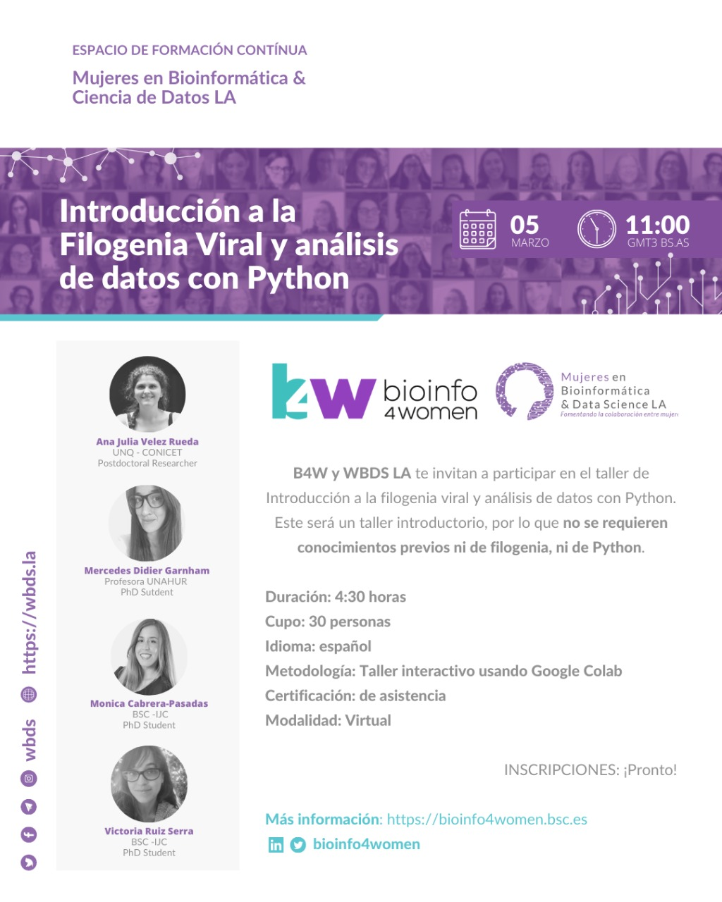
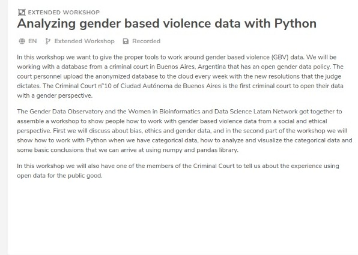
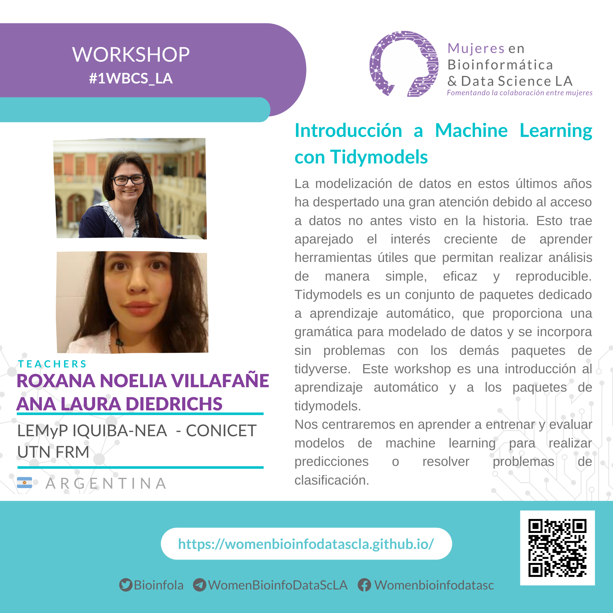
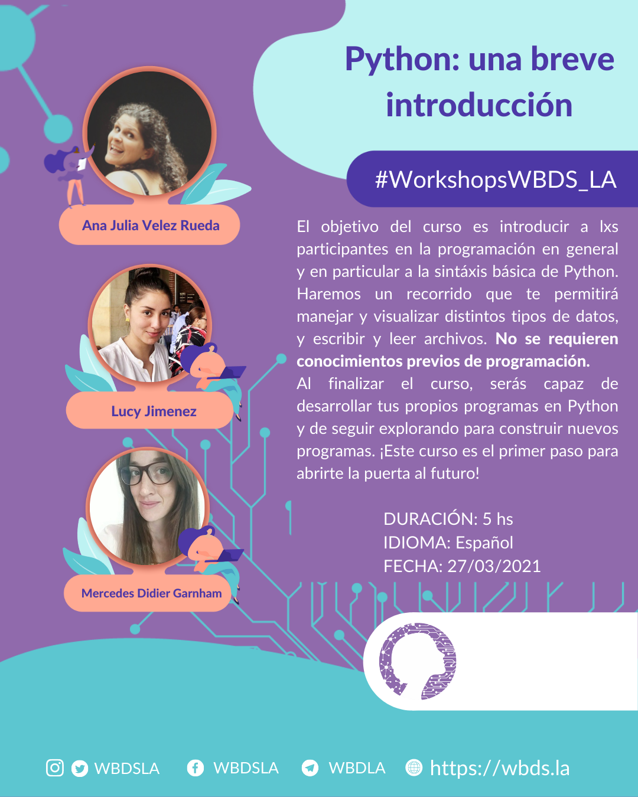
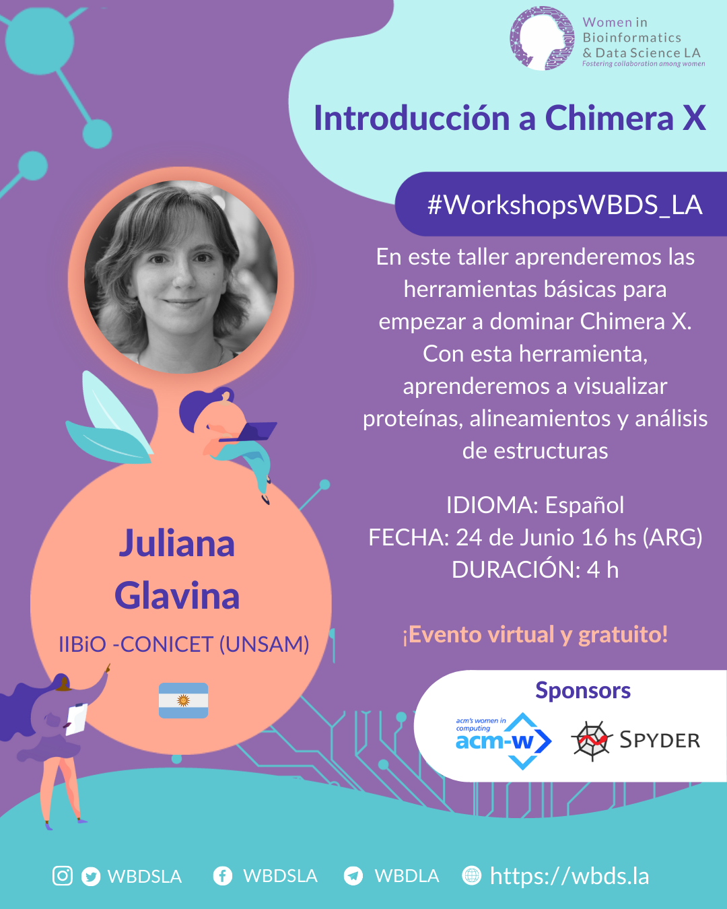
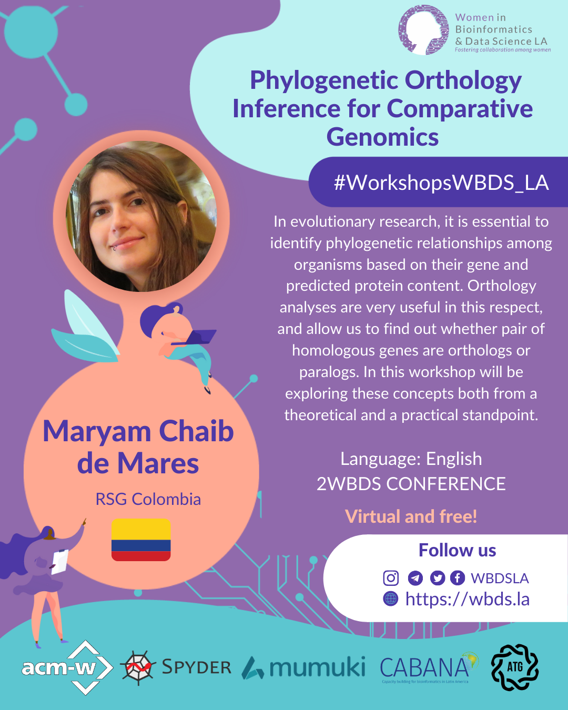

Introducción a la Filogenia Viral y análisis de datos con Python - B4W y WBDS LA te invitan a participar en el taller de Introducción a la filogenia viral y análisis de datos con Python. Este será un taller introductorio, por lo que no se requieren conocimientos previos ni de filogenia, ni de Python.
Analyzing gender based violence data with Python - In this workshop, we will give the proper tools to work around gender-based violence (GBV) data. We will be working with a database from a criminal court in Buenos Aires, Argentina that has an open gender data policy.
Roxna Noelia Villafañe, Patricia Loto and Ana Laura Diedrichs
Ana Julia Velez Rueda & Lucy Jimenez
Juliana Glavina
RSG-Colombia - Maryam Chaib De Mares & Zaide Montes Ortiz
